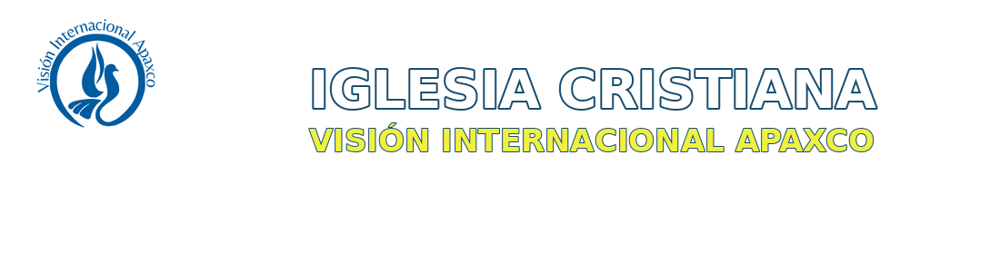

MES DE LA BIBLIA · SEPTIEMBRE 2026
Alabanza de la semana
VISIÓN INTERNACIONAL APAXCO
UN LUGAR PARA encontrarse CON DIOS
“Me buscarán y me encontrarán cuando me busquen de todo corazón.”Jeremías 29:13
Comenzar con gratitud
Salmo 118:24